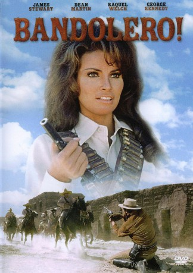

#2140 Bandolero
Alternativ: Bandolero!
 
 IMDB-Wertung: 6.6 / 10
IMDB-Wertung: 6.6 / 10  Metascore: 0
Metascore: 0 
Mit einer List gelingt es dem Revolverhelden Mace Bishop, seinen Bruder Dee und seine Bande aus dem Gefängnis zu befreien und vor dem Galgen zu retten. Gemeinsam fliehen sie nach Mexiko, gnadenlos verfolgt von Sheriff Johnson. Als sie auf eine Bande mexikanischer Bandoleros treffen, zieht sich die Schlinge um die Flüchtenden mehr und mehr zu, denn nun müssen sie gegen zwei Todfeinde kämpfen.
Jahr: 1968
Dauer: 106 Minuten
FSK: 16
Land: USA Studio: 20th Century FoxTonspuren:
Untertitel:
Auflösung: 720p (1280x544) Größe: 3543 MB
Genre: Action, Drama, Krimi, Western, Liebe
Regisseur: Andrew V. McLaglen
Drehbuch: James Lee Barrett, Stanley Hough
Soundtrack: Jerry Goldsmith
Darsteller:
Datei: X:\HD-Western-1960-1979\Bandolero (1968, FSK16, 1280x544).mkv seit 08.10.2015
Festplatte: HD Eastern+Western
 Es gibt insgesamt 110 Filme in der Gruppe 'HD-Western-1960-1979'
Es gibt insgesamt 110 Filme in der Gruppe 'HD-Western-1960-1979'